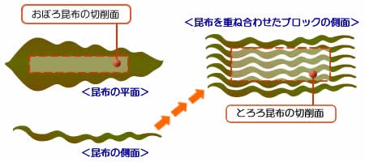

当店はとろろ昆布の加工機メーカー「報明和」を母体として昭和55年に開店致しました。平成15年からは自社製の切削機を店内に据え、加工・直販を始めました。
当店の特徴は長年とろろ昆布の加工に携わってきた技術と経験を活かした上質なとろろ昆布を、削りたての新鮮な風味そのままにご家庭にお届けできる事です。
機械的品質にこだわった「とろろ昆布」を是非ご賞味下さい。
昭和55年創業。彦根の地で育んだとろろ昆布の技術と味をお届けします。
当店はとろろ昆布の加工機メーカー「報明和」を母体として昭和55年に開店致しました。平成15年からは自社製の切削機を店内に据え、加工・直販を始めました。
機械的品質にこだわった「とろろ昆布」を是非ご賞味下さい。
日本最大の湖、琵琶湖を有する滋賀県東部のまち彦根市。当店はそのシンボル国宝彦根城のお膝元にございます。
簡単にご説明すると1枚の昆布の平面を削ったものが「おぼろ昆布」であり、何枚も重ね合わせてブロック状に成型した昆布の側面を削ったものが「とろろ昆布」です。
とろろ昆布を広げてご覧になると木目調の模様が見えます。その一筋毎が1枚の昆布の側面です。「おぼろ昆布」は熟練の職人さんの技で1枚ずつ削ります。デパートの祭事などで見ることが出来ます。対して「とろろ昆布」は機械設備を用いた8つの工程を経てようやく完成します。
「おぼろ昆布」の加工品質は職人さんの技にゆだねられますが「とろろ昆布」の加工品質は機械設備の精度とオペレーターにゆだねられます。
